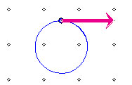
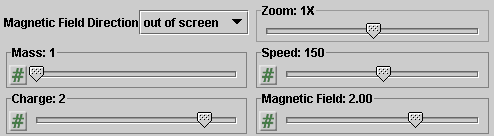
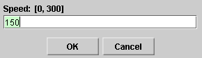

There are four basic control buttons. One of these, the Play/Pause button, is a dual button. The buttons are, from left to right:
-
 Returns
the simulation to the starting point with the
previously chosen initial values and system parameters.
Rewind makes it easy to compare motions that differ in
the setting of just one parameter. After clicking
Rewind, click Play to restart the motion or Step to go
through the motion one step at a time.
Returns
the simulation to the starting point with the
previously chosen initial values and system parameters.
Rewind makes it easy to compare motions that differ in
the setting of just one parameter. After clicking
Rewind, click Play to restart the motion or Step to go
through the motion one step at a time.
-
 Clicking
the Play button starts the motion of the particle.
Clicking
the Play button starts the motion of the particle.
 After
the Play button has been clicked, it changes into a
Pause button. Click the Pause button if you want to
get a 'snapshot' of the motion at a given instant.
When the Pause button has been clicked, it reverts
into the Play button. To resume the motion, click
Play once more.
After
the Play button has been clicked, it changes into a
Pause button. Click the Pause button if you want to
get a 'snapshot' of the motion at a given instant.
When the Pause button has been clicked, it reverts
into the Play button. To resume the motion, click
Play once more.
-
 Lets you
step through the motion in equal time steps.
Lets you
step through the motion in equal time steps.
-
 Resets
the applet to its default setting. The button is on the
far right so that it does not get pressed accidentally
in place of Rewind.
Resets
the applet to its default setting. The button is on the
far right so that it does not get pressed accidentally
in place of Rewind.
Adjustments in the initial conditions and system parameters can only be made after first clicking REWIND or RESET.


Displays or hides the charged particle's path in cyan. The path is shown in the following snapshot.

The path is not erased when you click Rewind.

Displays or hides the velocity vector (magenta). See snapshot in Number 2 above.

The Data toggle button displays/hides the Data box shown below. The Data box can also be closed by clicking in the little square marked by an "X" in the top right corner of the box. The Data box can be dragged anywhere within the applet window.

The following quantities are displayed in the Data box in SI-Units. The units are not indicated.
-
r: the radius of the charged particle's circular orbit in the magnetic field. The radius is given by
r = mv/(|q|B).
Note that the four sliders for m, v, q, and B are arranged in the order in which this ratio is written.
-
T: the period of the particle's circular orbit. It is equal to
T = 2πr/v = 2πm/(|q|B).
Cycles through three possible directions of the magnetic field:
- out of screen (indicated by small circles)
- into screen (indicated by small x's)
- to the right (indicated by small arrows pointing right)
The following snapshot shows the particle in a magnetic field pointing out of the screen, towards the viewer.
There are five sliders, shown in the following image. Clicking on a slider to the left or right of the slider tab allows fine adjustment of the slider setting.

Clicking on the Input Dialog button  of a slider will open a dialog for entering an
exact value for the slider setting. The dialog for the
v-slider is illustrated below. The range in which
values can be entered, from 0 to 300 m/s in this
case, is indicated above the data entry field.
of a slider will open a dialog for entering an
exact value for the slider setting. The dialog for the
v-slider is illustrated below. The range in which
values can be entered, from 0 to 300 m/s in this
case, is indicated above the data entry field.

The five sliders in the control panel allow you to adjust the values of the following quantities.
- Zoom. Allows you to vary the screen magnification between 1/10 times to 10 times.
- Mass. Allows you to vary the mass m of the particle in integer steps from 1 kg to 3 kg. The units are not indicated.
-
Speed. The incoming speed v of the
particle can be varied between 0 and 300 m/s
in steps of 1 m/s. The units are not indicated.
Note. The direction of the initial velocity is always to the right and cannot be adjusted. Its magnitude, the speed, can be adjusted only with this slider, not be dragging the tip of the velocity vector.
Charge. Allows you to vary the charge of the particle in
integer steps from -3 C to 3 C. The units are not indicated.
- Magnitude of the magnetic field. Allows you to vary the magnitude B of the magnetic field in steps of 0.01 T from 0 to 3.00 T. The units are not indicated.